Lotka-Volterra
El sistema Lotka-Volterra es un sistema dinámico de dos ecuaciones diferenciales que describe la interacción entre dos poblaciones distintas, usualmente presa-depredador.
$$ \left\{ \begin{array}{lc} \frac{dx}{dt} = \alpha x - \beta x y \text{;} & x(0) = x_{0}\text{,} \quad y(0) = y_{0} \\ \\ \frac{dy}{dt} = \delta x y - \gamma y \\ \end{array} \right. $$ Donde:
\( x(t) \) representa la población de presas e \( y\) la población de depredadores; y los parámetros:
- \( \alpha \) es la tasa de crecimiento de las presas.
- \( \beta \) es la tasa de pérdida de presas a causa de los depredadores.
- \( \delta \) es la tasa de crecimiento de los depredadores dependiendo de la disponibilidad de presas.
- \( \gamma \) es la tadsa de mortalidad de los depredadores.
\( x_{0} \ \text{y} \ y_{0} \) son la cantidad de presas y depredadores al tiempo \( t = 0 \), respectivamente.
Regiones de comportamiento
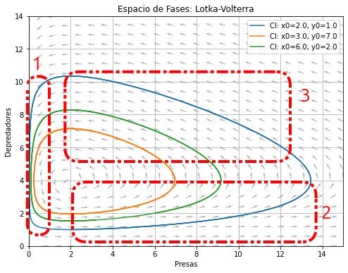
El mapa se dividió en tres regiones: la primera representa la caída de población de depredadores debido a una escacez de presas; la segunda el crecimiento de la población de presas debido a la ausencia de depredadores; y finalmente, la tercera que muestra el "momento de caza" pues se observa una disminución de presas acompañado de aumento de depredadores.
Caso de Referencia
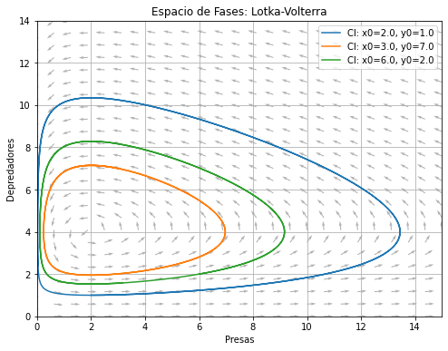
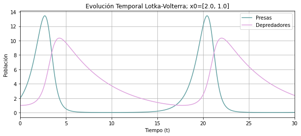
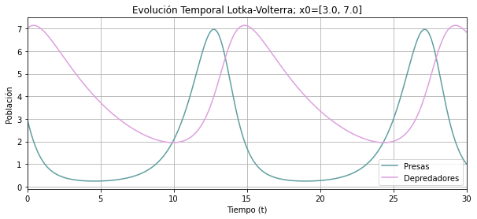
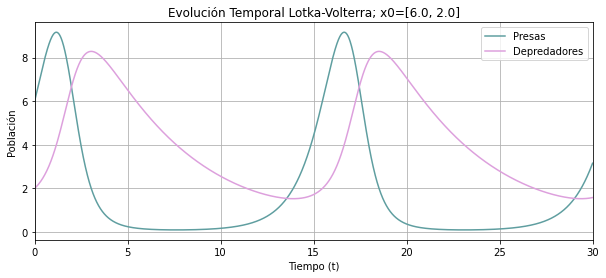
Caso \( \alpha = 0.9 \)
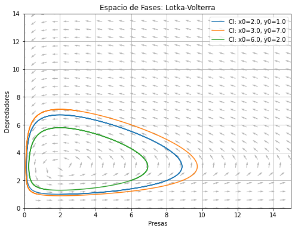
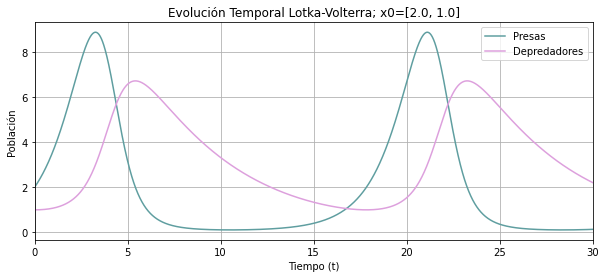
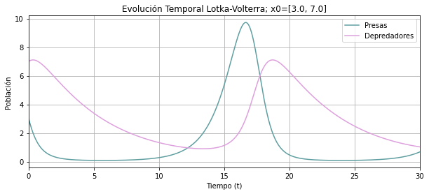
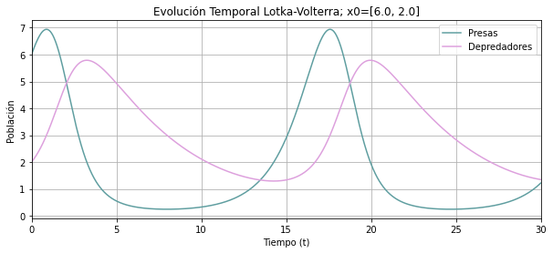
Caso \( \beta = 1 \)
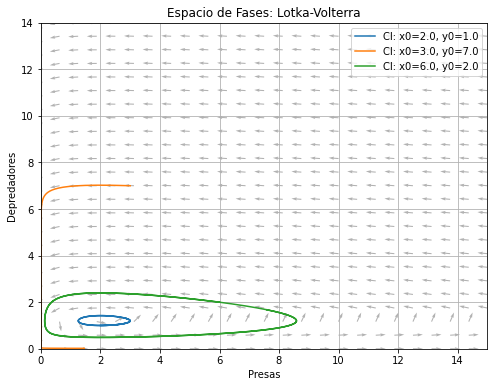
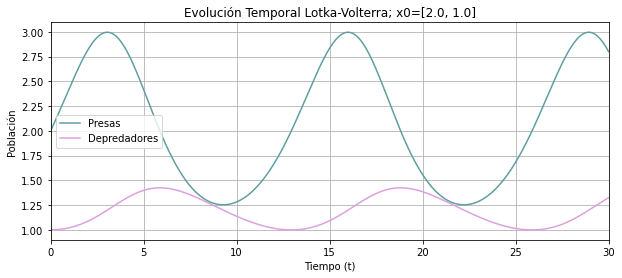
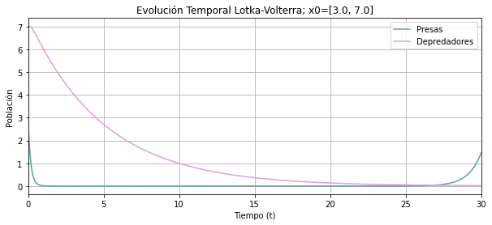
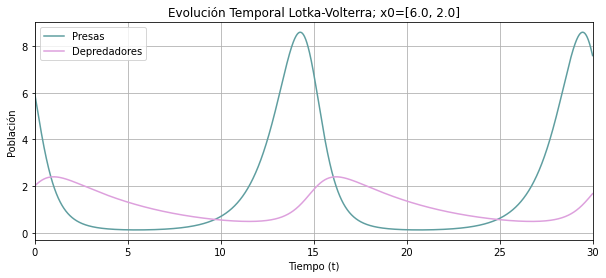
Caso \( \delta = 0.05 \)
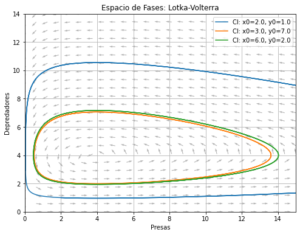
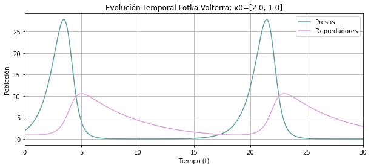
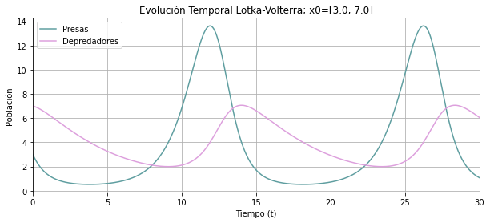
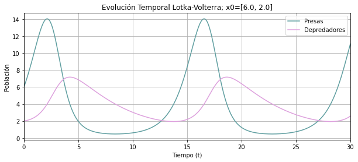
Caso \( \gamma = 0.4 \)
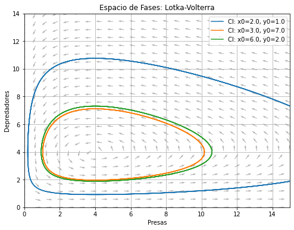
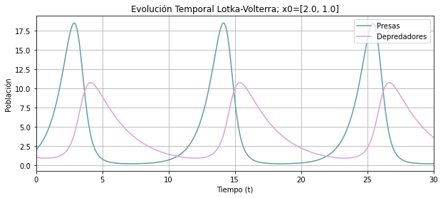
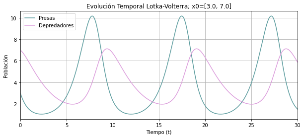
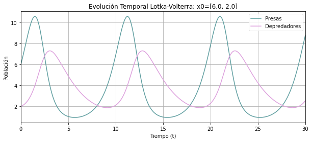
Péndulo simple
El péndulo simple es un módelo ideal donde se desprecian las fuerzas externas y se describe a través de la EDO de segundo orden:
$$ \frac{d^{2} \theta}{dt^{2}} + \frac{g}{\ell}sin(\theta) = 0$$Esta EDO se puede convertir en un sistema de dos ecuaciones de primer orden al definir \( \omega = \frac{d \theta}{dt}\) llegando a:
$$ \left\{ \begin{array}{lc} \frac{d \theta}{dt} = \omega \text{;} & \theta (0) = \theta_{0} \text{,} \quad \omega (0) = \omega_{0} \\ \\ \frac{d \omega}{dt} = -\frac{g}{l} sin(\theta) \\ \end{array} \right. $$ donde:
\( \theta \) representa la posición angular respecto al eje vértical; \( \omega \) es la velocidad angular; \( \ell \) la
longitud de la cuerda de masa despreciable; y \( g \) es la aceleración de la gravedad.
\( \tetha_{0} \text{y} \omega_{0} \) represantan la condiciones inciales del ángulo y velocidad angular, respectivamente.
Caso \( \ell = 1 \)
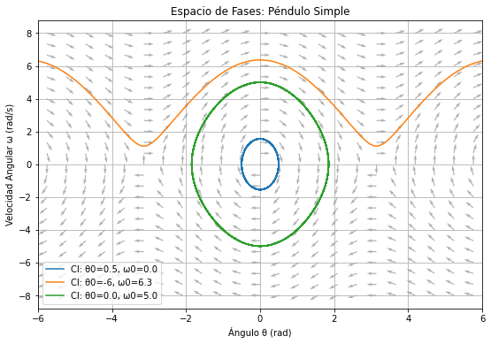
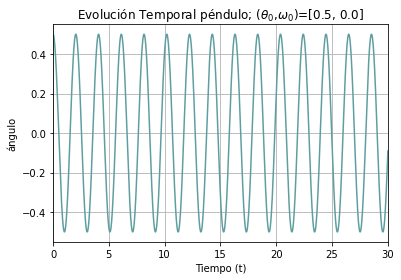
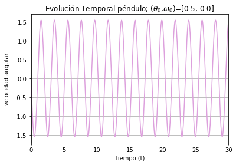
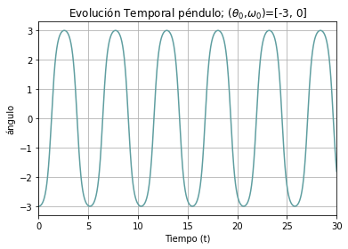
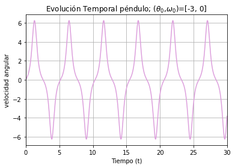
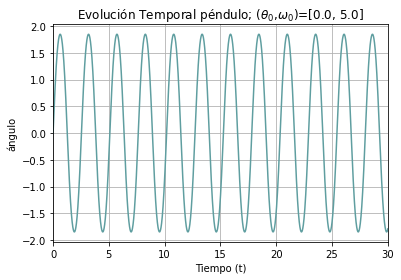
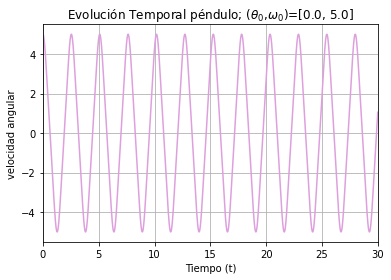
Caso \( \ell = 2 \)
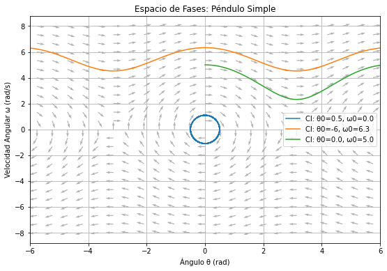
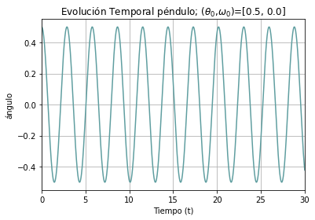
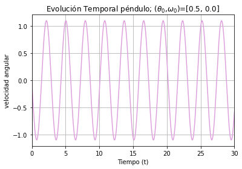
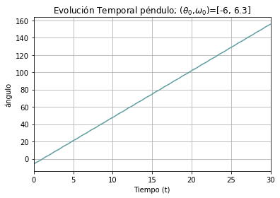
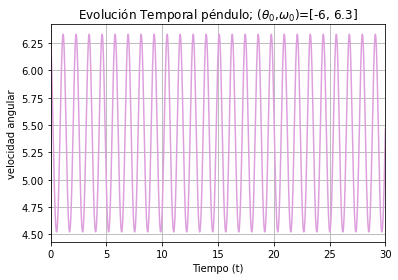
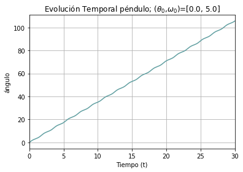
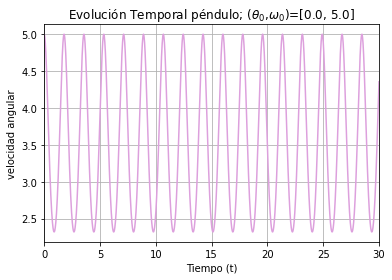
Atractor de Lorenz
El atractor de Lorenz es el sistema predilecto para comenzar a estudiar el caos y la sensibilidad a condiciones iniciales. Se describe a tráves de:
$$ \left\{ \begin{array}{lc} \frac{dx}{dt} = \sigma (x-y) \text{;} & x(0) = x_{0} \text{,} \quad y(0) = y_{0} \text{,} \quad z(0) = z_{0} \\ \\ \frac{dy}{dt} = x (\rho - z) \\ \\ \frac{dz}{dt} = xy -\beta_{l} z \\ \end{array} \right. $$ donde \( x \text{,} \ y \text{, y} \ z \) son variables y \( \sigma \text{,} \ \rho \text{, y} \ \beta_{l} \)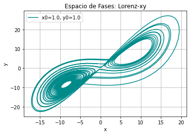
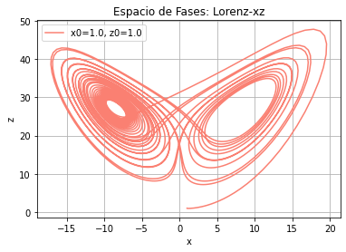
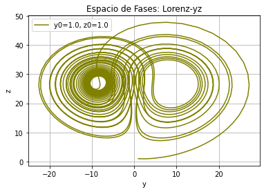
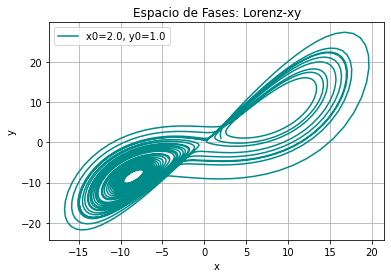
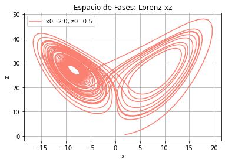
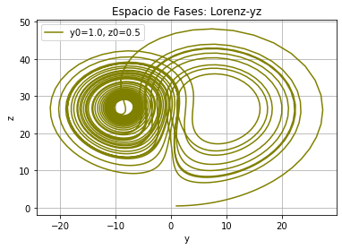
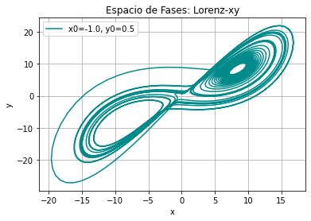
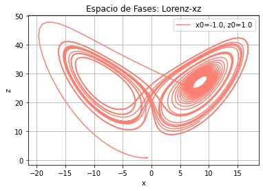
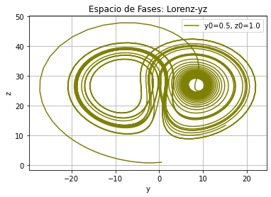
Sensibilidad a las condiciones iniciales.
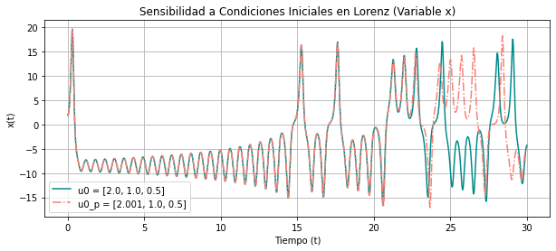
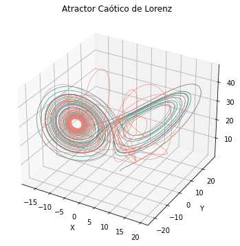
Conclusión
Recursos
En la siguiento liga se encuentran los códigos utilizados: Códigos